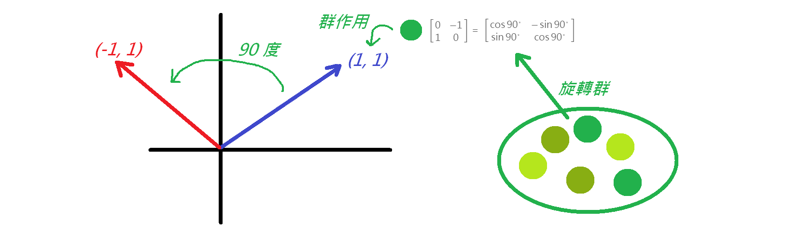
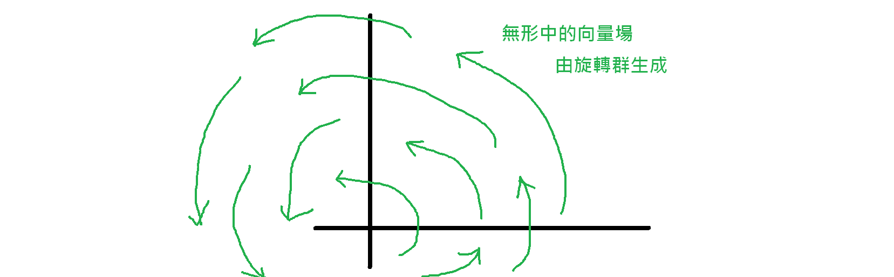
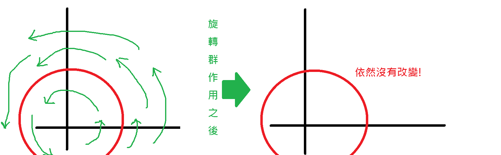
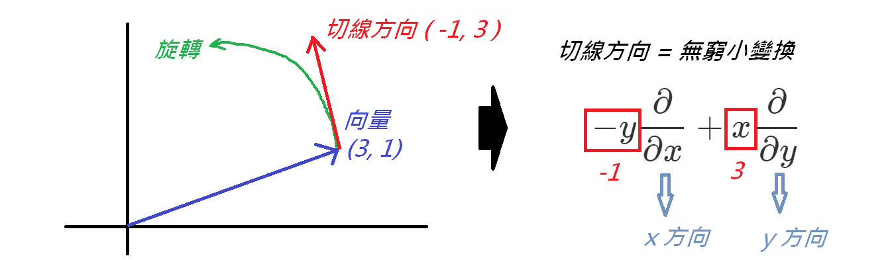
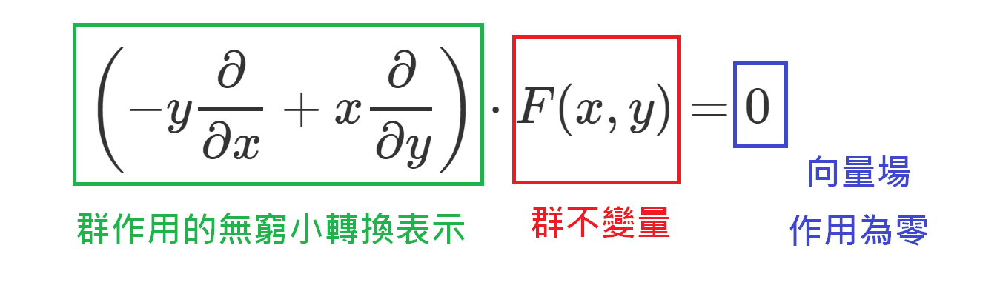

認識對稱分析與膠解
今天要介紹的是對稱分析，對稱分析是一種思考問題的方式，透過這個方式我們能將許多問題變成代數問題。大眾比較少這樣做，因為多數人不具有深入的代數知識，在此簡單介紹。
群 Group
群是一個數學的概念，簡單理解就是一個集合搭配一個運算，舉例來說，平面上的旋轉群就是一堆旋轉矩陣搭配矩陣乘法：
$$G = \left ( \begin{bmatrix} \cos \theta & - \sin \theta \\ \sin \theta & \cos \theta \end{bmatrix} ,\ \ * \right )$$
群的元素有個特色，就是能彼此疊加，簡單理解就是旋轉矩陣乘以旋轉矩陣還是旋轉矩陣：
$$\begin{bmatrix} \cos \theta & - \sin \theta \\ \sin \theta & \cos \theta \end{bmatrix} \cdot \begin{bmatrix} \cos \phi & - \sin \phi \\ \sin \phi & \cos \phi
\end{bmatrix} = \begin{bmatrix} \cos (\theta + \phi) & - \sin (\theta + \phi) \\ \sin (\theta + \phi) & \cos (\theta + \phi) \end{bmatrix}$$
所以兩個群元素（也就是兩個集合元素搭配一個運算方法）可以得到一個新的群元素。怎麼理解這個概念呢？
假設我們在玩一個棋類遊戲，透過棋譜我們能用幾個步驟實現一個攻擊策略，那組合成更大的步驟就能實現一個更有遠見的攻擊策略。
因此群就可以看成是「棋譜書」，而群元素就可以看成是「每個棋譜」而群搭配的運算就是「組合棋譜的步驟」
群作用 Group Action
既然有了棋譜，真正派上用場的時間就是到棋盤對決。
因此群的元素，需要丟到一個空間中，讓群元素在該空間產生作用，這個作用我們稱做群作用（Group Action）。
舉例來說，一個旋轉群的群元素是旋轉矩陣，我們把旋轉 90 度的矩陣丟到平面上對一組向量 (1,1) 產生群作用：
$$\begin{bmatrix} \cos 90 ^{\circ} & - \sin 90 ^{\circ} \\ \sin 90 ^{\circ} & \cos 90 ^{\circ} \end{bmatrix} = \begin{bmatrix} 0 & -1 \\ 1 & 0 \end{bmatrix}\ \ ,\ \ \ \ \begin{bmatrix} 0 & -1 \\ 1 & 0 \end{bmatrix} \cdot \begin{bmatrix} 1 \\ 1 \end{bmatrix} = \begin{bmatrix} -1 \\ 1 \end{bmatrix} $$

因此透過群作用之後，你就會得到被作用之後的向量 (-1,1) 就像是把棋譜活用到棋盤對決。
如果把這個概念類比到各種作用，例如物理上的力矩作用、化學上的燃燒作用、社會行為的交互作用，那又會是什麼樣的群呢？這些都是很好玩的問題。比較進階的概念是，如果你把群作用看成是類神經網路中每一層的轉換，就能解放你對於類神經網路的想像，你可以有各種不同的神經元權重運算方式，只要你能定義出一種群作用的運算方式。
向量場 Vector Field
好，既然我們有了一本「棋譜集」，所以我們看到棋盤的時候就會開始無形想像棋子的移動和棋局的變化。這也是群作用一個很重要的想法，通常我們手上不會只有單一一個群元素，而是有一個完整的群，例如旋轉群有各種角度不同的旋轉矩陣。
因此當我們在考量旋轉群在平面上的群作用，我們會想整個群在平面上的影響，這個平面應該無形中會有一個旋轉的作用力，就像是在一張紙底下放了一個旋轉的磁鐵，只要放一個鐵球上去就會被旋轉的磁鐵帶著動：

群不變量 Group Invariant
對於你手上現在拿著的這本「棋譜書」，誰會是實力相當的對手呢？很簡單，只要對手能不被你的棋譜策略給影響到，鑽你棋譜沒有注意到的漏洞，可能就會和你打成平手了。
透過這個想法，我們可以開始思考，在群作用底下，有沒有什麼樣的對象是不會受到群作用影響？換句話說，有一個集合內的元素，經過群作用之後仍然在這個集合裡面。舉例來說，以前面提到的「旋轉群」為例，一個以原點為圓心、圓上一點為頂點組成的向量集合，就不會受到旋轉群的群作用影響：

此時我們會稱這個不受到群作用而有所改變的「圓」集合，叫做「群不變量」也就是所謂在代數領域中的 Invariant
無窮小轉換 Infinitesimal Transformation
我們現在以旋轉群為例，我們仔細來思考旋轉這件事情，如果我們把旋轉的角度拉到非常非常小，也就是平面上一個向量正準備要開始旋轉了！那他的移動方向應該是往旋轉軌跡的切線方向前進：

那麼無窮小轉換呢，其實就是要來表達群作用在非常微小短暫的瞬間，他對於作用空間的影響，通常習慣上我們是用微分的符號作為切線分量向量的表示，原因後面會詳述，這邊如果有學過微積分的，應該對於切線或是 dx, dy 不會太陌生，應該可以理解這個觀念。
接著，我們回過頭來看前面提到的群不變量，我們已經知道圓上的所有點形成的集合是不會受到旋轉群作用的影響，換句話說，旋轉群的群作用無論多麼微小（或是多麼巨大）對於圓上點所成的集合都不會有影響，這些圓上的點依然都會是圓上的點，也就是整個旋轉群的「向量場」作用在以原點為圓心的圓上點集合{ C } ，都不會產生作用，我們用這種方式來表示：
$$ \left ( -y\frac{\partial }{\partial x} + x\frac{\partial }{\partial y} \right ) \cdot \left \{ \ C \ \right \} = 0 $$
假如我們把圓上點的集合 { C } 用一個函數 F(x,y) 來表達，這個函數包含兩個維度 x, y 並整理一下式子：
$$ \left ( -y\frac{\partial }{\partial x} + x\frac{\partial }{\partial y} \right ) \cdot F(x,y) = 0 $$
$$ -y\frac{\partial F}{\partial x} + x\frac{\partial F}{\partial y} = 0 $$
恭喜你啦！你會得到一個微分方程，如果你去解他，你會得到這個函數長成這樣子：
$$ F(x,y) = x ^2 + y ^2 + k $$
有沒有覺得上面這個式子很熟悉呢，這正就是「圓」在平面上的方程式！而圓方程式在受到旋轉向量場作用之下，不會有任何變化，也就可以看做向量場在圓方程式上的作用造成的影響為零：

從這邊就能了解到，假如我們手上有一個方程式要來解決，你就可以把這個方程式看成是一個群作用在你的解空間（定義域）而你要在解空間去找出群不變量，這個群不變量就能在群作用底下使得方程式為零，這就是把數學方程式的問題轉換成代數問題的方法。
對稱分析 Symmetry Analysis
那麼對稱分析呢，其實就是在研究各種不同的群作用和他在解空間的群不變量之間的關係，那為什麼叫「對稱」呢？因為群不變量在作用前後彷彿沒有變化，呈現一個「對作用前後表示對稱」的狀態，所以針對群不變量的研究分析，我們也就叫做對稱分析了。
那由於對稱分析用的方法，並不是透過分析方法來去對方程式或問題求解，而是用群作用來找群不變量，所以你會發現在對稱分析領域中找出來的群不變量，並不像一般分析方法求出來那樣漂亮美麗一個公式就能表達，往往可能群不變量好多個局部集合，無法用一個單一函數來描述，這也使得透過對稱分析求得的解被戲稱為「膠解」，也就是一塊一塊地凝結在解空間中。